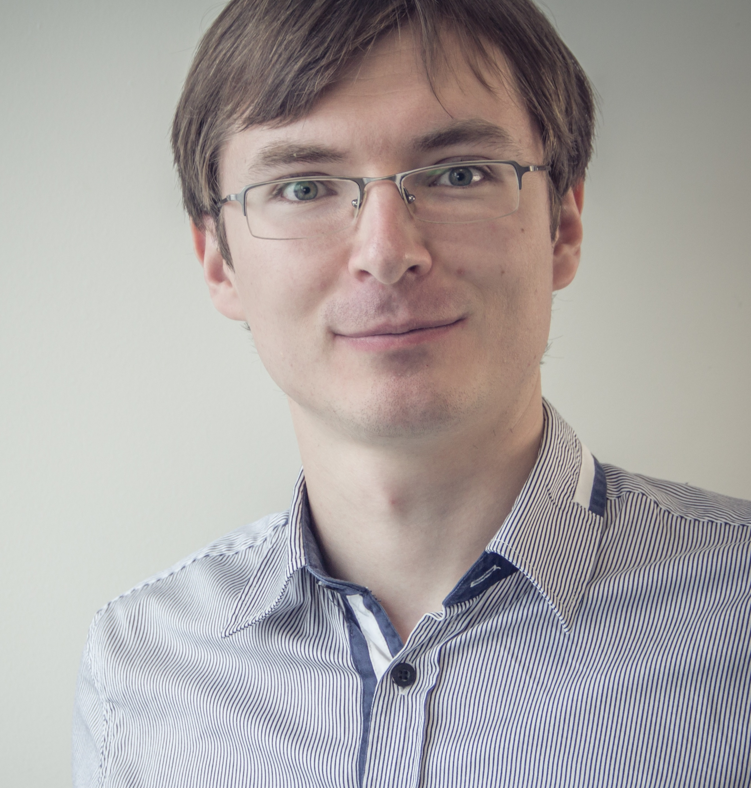
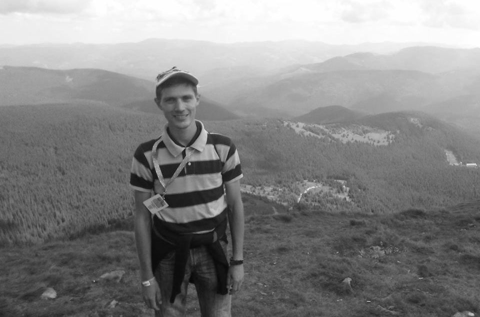
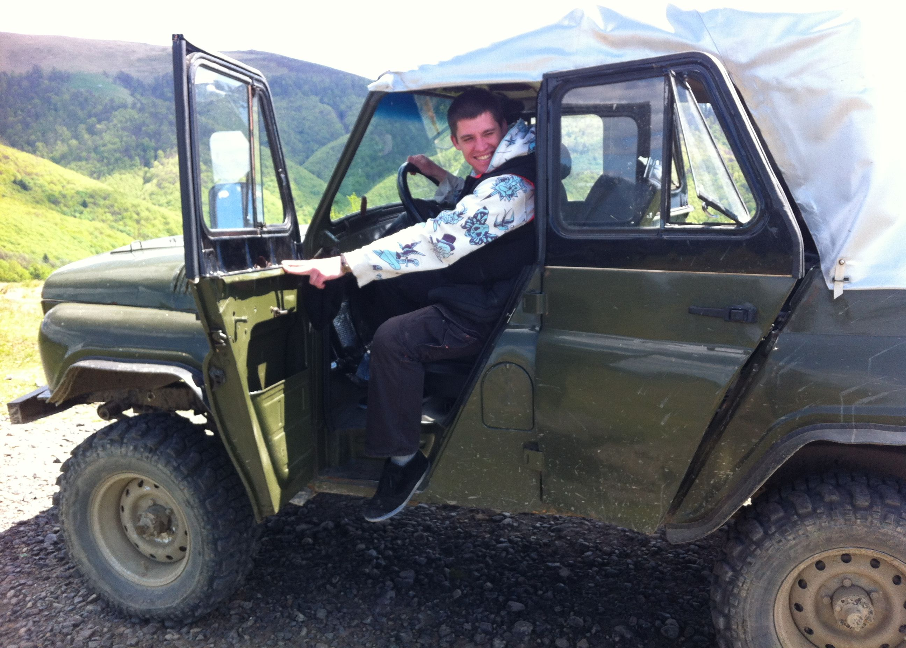
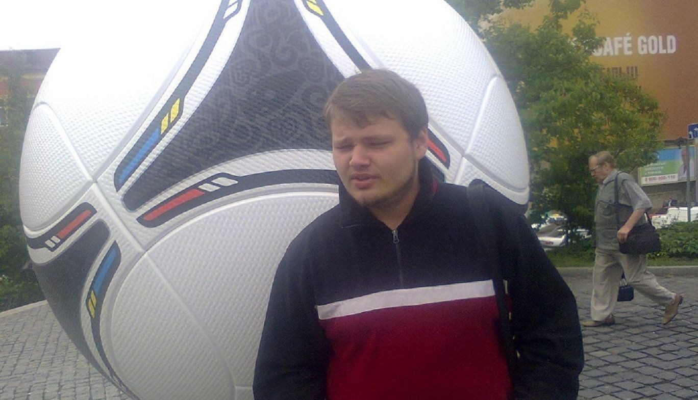
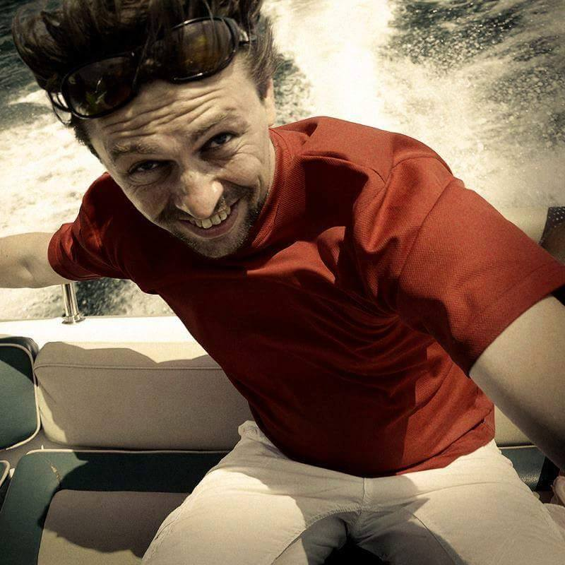
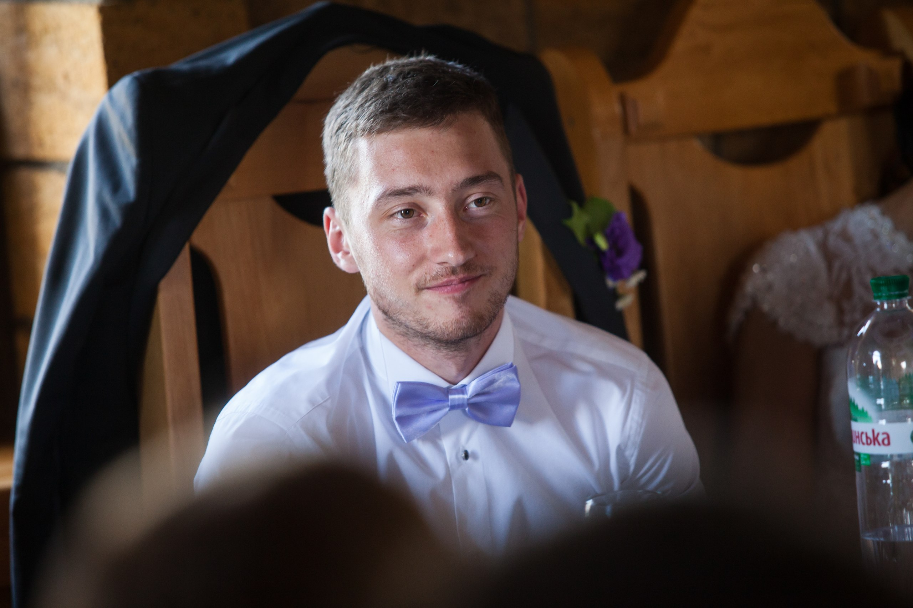

- 
Приходько Руслан.
Українець.
29 років.
Вид діяльності/робота:
спеціаліст з Міжнародних Стандартів Фінансової Звітності (МСФЗ)
Сильні сторони:
досвід роботи в команді,
відповідальний,
позитивний,
відкритий,
уважний,
робота з цифрами.
Чим я можу бути корисним команді?
Участь у плануванні роботи команди і відповідальність за певну ділянку.
 Гайдай Андрій.
Українець.
35 років.
Вид діяльності/робота:
IT спеціаліст.
Сильні сторони:
уважний до деталей,
структуроване мислення,
завжди готовий допомогти, коли маю потрібні знання,
без шкідливих звичок,
привітний та відкритий.
Чим я можу бути корисним команді?
Братиму активну участь в усіх проектах, що в нас будуть
Гайдай Андрій.
Українець.
35 років.
Вид діяльності/робота:
IT спеціаліст.
Сильні сторони:
уважний до деталей,
структуроване мислення,
завжди готовий допомогти, коли маю потрібні знання,
без шкідливих звичок,
привітний та відкритий.
Чим я можу бути корисним команді?
Братиму активну участь в усіх проектах, що в нас будуть
 Меліш Ірина.
Українка.
32 роки.
Вид діяльності/робота:
Економіст за фахом. Працювала в торгівлі менеджером постачання.
Сильні сторони:
цілеспрямована
відповідальна
креативна
працьовита
Чим я можу бути корисним команді:
Завжди доводжу почату справу до кінця
Меліш Ірина.
Українка.
32 роки.
Вид діяльності/робота:
Економіст за фахом. Працювала в торгівлі менеджером постачання.
Сильні сторони:
цілеспрямована
відповідальна
креативна
працьовита
Чим я можу бути корисним команді:
Завжди доводжу почату справу до кінця
- 
Олег Обіух. Українець. 23 роки.Вид діяльності/робота:
Займаюсь з деревом. Виготовляю шкатулки, журнальници, іграшоки з дерева та багато іншого.
Сильні сторони:
дисциплінований,
настійливий,
оптиміст,
порядочний,
чесний.
Без шкідливих звичок!
Чим я можу бути корисним команді?
Братиму активну участь в усіх наших проектах.
- 
Опарін Євген.
Українець. 29 років. Освіта: вища. Вид діяльності/робота:
кіноіндустрія. Займаюсь організацією кінознімального процесу. Хоббі: аеро-відео-зйомки, музика, футбол, подорожі, навчатись, люблю активний образ життя. Маю декілька своїх web-проектів.
Сильні сторони:
відповідалний,
креативний,
настійливий,
порядочний,
чесний,
оптиміст.
Чим я можу бути корисним команді?
Можу генерувати різні ідеї, проекти тощо. Завжди знаходжу вихід із складних ситуацій.
- 
Олег Петренко.
Українець/
24 роки.
Вид діяльності/робота:
Project Manager сайтів.
Сильні сторони:
досвід у менеджменту IT проектів,
відповідальність,
робота в команді,
орієнтовність на результат,
вміння розвивати ідеї,
комунікабельність.
Чим я можу бути корисним команді:
Маю досвід організації та розвитку IT проектів.
Вмію правильно розставляти пріорітети та планувати роботу в команді.
Заряджений на якісний і швидкий саморозвиток.
Здатний генерувати та розвивати інтересні ідеї
- 
Александр Куценко.
Меня зовут Александр Куценко (nGine). Мне 38 лет.
Живу в Киеве. Сейчас работаю дизайнером.
Решил пойти на курс frontend-разработчика чтобы расширить сферу своих знаний.
Полиграфический дизайн переходит в веб и интерактив, значит и мне туда дорога.
Увлекаюсь туризмом, дайвингом, спортом, фотографией.
Моя цель от этого курса стать Frontend-разработчиком, заниматься дизайном и реализацией красивых сайтов и приблизится к своей цели стать full-stack разработчиком в цепочке дизайн - Frontend - Java.
После этого курса я планирую продолжить обучение на курсе GoJava. Все только начинается!
- 
Антон Сидоренко
28 лет
вид деятельности, работа
Юрист, работаю в нефтегазовой отрасли, также имею образование в сфере финансов
сильные стороны
аккуратен,
пунктуален,
деятелен
чем могу быть полезен
готов помогать как в организации, так и в исполнении, я не гордый :-)
живо интересуюсь компьютерной наукой, настроен на плодотворную и активную работу
неплохо знаю английский, немного говорю на немецком